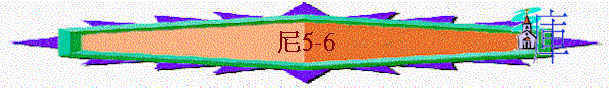

|
主題：重建之路 |
|||||||||||
|
重建城牆 |
重整聖民 |
||||||||||
|
由來 |
安排 |
挑戰 |
完成 |
律法 |
認罪 |
立約 |
留守 |
事奉 |
成禮 |
財物 |
潔淨 |
|
1:1-2:8 |
2:9-3:32 |
4:1-6:19 |
7 |
8 |
9:1-37 |
9:38-10: |
11 |
12:1-26 |
12:27-43 |
12:44-47 |
13 |
一.重建城牆(1-7)
1.重建的由來(1:1-2:8)
2.重建的安排(2:9-3:32)
3.重建的挑戰(4:1-6:19)
A.外敵的攪亂(4)
B.內部的剝削(5)
～當神的百姓專心為神作工，重建城牆時，內部也出現了令人憤怒的事，就是貴冑及官長向弟兄取利問題
a.百姓的申訴
(1)他們的呼號：埋怨他們的弟兄
5:1 百姓和他們的妻大大呼號，埋怨他們的弟兄猶大人。
～呼號有叫或叫喊意思，而此呼喊是從百姓和他們的妻而出的，即不是少部份人的聲音，是很多家庭的聲音
～而呼號的內容是埋怨他們的弟兄猶大人，猶大人應指下文向他們謀取高利息借貸的猶大貴冑及官長
(2)他們的苦訴
(A)不夠糧食
5:2 有的說：「我們和兒女人口眾多，要去得糧食度命」；
～呂振中譯本「有的說：『我們已拿我們的兒女為質當（拿為、質當一詞傳統作眾多。與下節「典」字同字〕去得五穀喫、來度活了。』」
～他們的人口太多，所以不夠食物，另外可能也有另一意思，他們將自己的兒女作質當，能借得金錢來買糧食度命。
(B)典當家業
5:3 有的說：「我們典了田地、葡萄園、房屋，要得糧食充飢」；
～「典」承擔保證，典押，交換，他們用田地、葡萄園、房屋作為典當，為要得錢財可買食糧充飢
(C)借錢納稅
5:4 有的說：「我們已經指著田地、葡萄園，借了錢給王納稅。
(D)抵押兒女
5:5 我們的身體與我們弟兄的身體一樣；我們的兒女與他們的兒女一般。現在我們將要使兒女作人的僕婢，我們的女兒已有為婢的；我們並無力拯救，因為我們的田地、葡萄園已經歸了別人。」
～他們申訴大家的兒女及身體也是一樣，現在卻出現了他們的兒女卻因家庭沒能力無力還債，更進一步抵押兒女成為僕婢作。
(E)無力解困
b.領袖的處理
(1)身同感受
5:6 我聽見他們呼號說這些話，便甚發怒。
(A)聽到他們的聲音
～尼希米聽到他們的呼聲
(B)感受他們的怒憤
～他沒否定他們的看法與感受，也感受他們的怒氣，而加上他也看出此不義之事，令他甚感發怒來
(2)籌劃處理
5:7 我心裏籌劃，就斥責貴冑和官長說：「你們各人向弟兄取利！」於是我招聚大會攻擊他們。
～他是有計劃地處理此申訴之事，但要仔細思考，當作什麼事才能取得果效。
(3)當面指斥
(A)先個別的指斥---向弟兄取利
5:7 我心裏籌劃，就斥責貴冑和官長說：「你們各人向弟兄取利！」於是我招聚大會攻擊他們。
～他第一件事是要先直接向有關人士---貴冑(貴族的後代)和官長作指斥他們的不是，他們的主要問題是向弟兄取利！
(B)招大會的譴責
～為何要招聚大會呢？可能有以下原因：
＊之前的指斥沒效
＊因受影響的人士數目眾多，作眾人公開的交待
＊可讓貴冑和官長作公開的申辯
＊用群眾壓力令貴冑和官長肯回轉
＊作公開的教育
(a)無情無義
5:8 我對他們說：「我們盡力贖回我們弟兄，就是賣與外邦的猶大人；你們還要賣弟兄，使我們贖回來嗎？」他們就靜默不語，無話可答。
～之前尼希米和他的兄弟有情有義的，用金錢贖回被賣與外邦的猶大人，現他們卻因向弟兄取利，要他們被賣作抵賞，難道要尼希米和他的兄弟再次贖回他們來！尼希米和他的兄弟的表現卻反顯出貴冑和官長的無情無義
(b)不敬畏神
5:9 我又說：「你們所行的不善！你們行事不當敬畏我們的 神嗎？不然，難免我們的仇敵外邦人毀謗我們。
～敬畏神的人是行神眼中為正為善的事，也行律法的規條，現他們這樣行不善的事，也違反律法的規條，已是不敬畏神，更令仇敵見到神的子民不行神的律法，而遭受他們的嘲笑，使神的名被褻瀆。
(c)違背真理
5:10 我和我的弟兄與僕人也將銀錢糧食借給百姓；我們大家都當免去利息。
出22:25 「我民中有貧窮人與你同住，你若借錢給他，不可如放債的向他取利。
利25:37 你借錢給他，不可向他取利；借糧給他，也不可向他多要。
～神的律例是將銀錢及糧食借給百姓，當免去利息，但他們卻違背真理，向兄弟取利！
(C)要歸還的勸導
5:11 如今我勸你們將他們的田地、葡萄園、橄欖園、房屋，並向他們所取的銀錢、糧食、新酒，和油，百分之一的利息都歸還他們。」
～「他們的田地、葡萄園、橄欖園、房屋」指窮人所抵押之財產，或因無力還債而被沒收的財產。
～「百分之一的利息」指利息和實物的算法，通常每月折合本金的百分之一，意即年利率百分之十二。
(D)必照行的立志
5:12 眾人說：「我們必歸還，不再向他們索要，必照你的話行。」我就召了祭司來，叫眾人起誓，必照著所應許的而行。
～「應許」言語，說話，指他們所應承的說話，願歸還過往所收的利息，也立志不向弟兄多索取利息
(E)神管教的警告
5:13 我也抖著胸前的衣襟，說：「凡不成就這應許的，願 神照樣抖他離開家產和他勞碌得來的，直到抖空了。」會眾都說：「阿們！」又讚美耶和華。百姓就照著所應許的去行。
～「我也抖著胸前的衣襟」這是一種象徵性的咒詛之動作，若百姓不照吩咐的去行，必受咒詛
(F)照吩咐的去行
～他們說：「阿們！」表示真實的，願照著所應承的說話去行
(4)以身作則
～尼希米也用自己作為榜樣，激勵他們善待弟兄！
(A)放棄權益
5:14 自從我奉派作猶大地的省長，就是從亞達薛西王二十年直到三十二年，共十二年之久，我與我弟兄都沒有吃省長的俸祿。
～尼希米從獲亞達薛西王允准下來到猶大地重建城牆，他也被任命為猶大省的省長
～他在作省長期間，本有權柄在所管治的地方抽稅支付個人開支，但他知百姓疾苦，他放棄權益，沒有收取
(B)不行剝削
5:15 在我以前的省長加重百姓的擔子，每日索要糧食和酒，並銀子四十舍客勒，就是他們的僕人也轄制百姓；但我因敬畏 神不這樣行。
～「銀子四十舍客勒」約一般人半年工資，以前的省長會每天向百姓取這個數目，但他不沒收取，乃在於他敬畏神，善待神的子民
(C)專心修造
5:16 並且我恆心修造城牆，並沒有置買田地；我的僕人也都聚集在那裏做工。
(D)接待他人
5:17 除了從四圍外邦中來的猶大人以外，有猶大平民和官長一百五十人在我席上吃飯。
5:18 每日預備一隻公牛，六隻肥羊，又預備些飛禽；每十日一次，多預備各樣的酒。雖然如此，我並不要省長的俸祿，因為百姓服役甚重。
～「從四圍外邦中來的猶大人」指從各國和各省暫時回到耶路撒冷敬拜的猶太人，「有猶大平民和官長一百五十人」指包括親友、僕人、參謀和各級官長在內共有一百五十人。
～尼希米不單沒向百姓抽稅支付個人開支，他更接待猶大地的不同人士
(E)求神記念
5:19 我的 神啊，求你記念我為這百姓所行的一切事，施恩與我。
C.裡外的攻擊(6)
～此段提到敵人與猶大一些人裡應外合，欲破壞尼希米的工作
a.外敵們設計的加害與神僕人堅定的回應
(1)假意的相會與即時的推卻
6:1 參巴拉、多比雅、阿拉伯人基善和我們其餘的仇敵聽見我已經修完了城牆，其中沒有破裂之處（那時我還沒有安門扇）的，
6:2 參巴拉和基善就打發人來見我，說：「請你來，我們在阿挪平原的一個村莊相會。」他們卻想害我。
6:3 於是我差遣人去見他們，說：「我現在辦理大工，不能下去。焉能停工下去見你們呢？」
～「阿挪平原」位於耶路撒冷和撒瑪利亞之間地方，屬波斯帝國管轄
～仇敵假意想在中立之地與尼希米相會，實意是想害他（可能是劫持人質或暗殺）
～但尼希米沒中敵人的詭計，他知道他們的惡意，用專心工作的理由推卻他們
(2)不息的邀請與堅持的回應
6:4 他們這樣四次打發人來見我，我都如此回答他們。
～敵人仍不息的四次打發人來見尼希米，但他仍堅持的推卻他們
(3)捏造的消息與明辨的洞悉
6:5 參巴拉第五次打發僕人來見我，手裏拿著未封的信，
6:6 信上寫著說：「外邦人中有風聲，迦施慕（就是基善，見二章十九節）也說，你和猶大人謀反，修造城牆，你要作他們的王；
6:7 你又派先知在耶路撒冷指著你宣講，說在猶大有王。現在這話必傳與王知；所以請你來，與我們彼此商議。」
6:8 我就差遣人去見他，說：「你所說的這事，一概沒有，是你心裏捏造的。」
～敵人捏造聽到他們想謀反的風聲，歧途要尼希米出來，共商此事，但尼米米洞悉他們的意圖，知道他們是捏造不利自己的消息。
(4)動搖的計謀與靠神的堅固
6:9 他們都要使我們懼怕，意思說，他們的手必軟弱，以致工作不能成就。 神啊，求你堅固我的手。
～成就有完成意思，堅固有加強及使強壯意思
～仇敵的目的是要令他們懼怕及軟弱，不能成就所作的工，而尼希米的回應仍是向神呼求，求神堅固他們，使他們不懼怕及有能力完成神的工作！
b.內部受賄下的引誘與神僕人對罪的說不
(1)引誘犯罪
6:10 我到了米希大別的孫子、第來雅的兒子示瑪雅家裏；那時，他閉門不出。他說：「我們不如在 神的殿裏會面，將殿門關鎖；因為他們要來殺你，就是夜裏來殺你。」
代上24:18 第二十三是第來雅，第二十四是瑪西亞。
代上24:19 這就是他們的班次，要照耶和華─以色列的 神藉他們祖宗亞倫所吩咐的條例進入耶和華的殿辦理事務。
～米希大別的孫子、第來雅的兒子示瑪雅可能是祭司的後裔，代上也題及第來雅祭司家族的身份，祭司是可入神的殿中事奉的
～他想尼希米進入殿中受保護，免遭敵人殺害
(2)堅定說不
6:11 我說：「像我這樣的人豈要逃跑呢？像我這樣的人豈能進入殿裏保全生命呢？我不進去！」
民footnote reference;¼ÐÃD 1 ¦r¤¸;Title;1:51 帳幕將往前行的時候，利未人要拆卸；將支搭的時候，利未人要豎起。近前來的外人必被治死。
民18:6 我已將你們的弟兄利未人從以色列人中揀選出來歸耶和華，是給你們為賞賜的，為要辦理會幕的事。
民18:7 你和你的兒子要為一切屬壇和幔子內的事一同守祭司的職任。你們要這樣供職；我將祭司的職任給你們當作賞賜事奉我。凡挨近的外人必被治死。
～舊約的條例，非聖職人員不可進神的殿中，尼希米守神的誡命，堅決不入殿中
(3)明辨惡謀
6:12 我看明 神沒有差遣他，是他自己說這話攻擊我，是多比雅和參巴拉賄買了他。
6:13 賄買他的緣故，是要叫我懼怕，依從他犯罪，他們好傳揚惡言毀謗我。
～尼希米知道示瑪雅是受人賄買，要令他因懼怕而入聖殿而致犯罪，令他們可以傳揚惡言毀謗他謗，
(4)求神記念
6:14 我的 神啊，多比雅、參巴拉、女先知挪亞底，和其餘的先知要叫我懼怕，求你記念他們所行的這些事。
～原來也有女先知挪亞底，和其餘的先知也受人賄買，要令尼希米懼怕
～尼希米也求神記念他們的惡行
c.裡外結盟下的攻擊與選民靠神下的完工
(1)至終的完工
6:15 以祿月二十五日，城牆修完了，共修了五十二天。
6:16 我們一切仇敵、四圍的外邦人聽見了便懼怕，愁眉不展；因為見這工作完成是出乎我們的 神。
～「以祿月」是當時波斯曆制的六月，相當於陽曆八、九月間。是亞達薛西王二十年的年底，用了五十二天的時間將城牆修完，仇敵也懼怕，也看到是猶大人的神完成此工！
(2)裡外的攻擊
(A)通風報信
6:17 在那些日子，猶大的貴冑屢次寄信與多比雅，多比雅也來信與他們。
(B)私下結盟
6:18 在猶大有許多人與多比雅結盟；因他是亞拉的兒子，示迦尼的女婿，並且他的兒子約哈難娶了比利迦兒子米書蘭的女兒為妻。
3:4 其次是哈哥斯的孫子、烏利亞的兒子米利末修造。其次是米示薩別的孫子、比利迦的兒子米書蘭修造。其次是巴拿的兒子撒督修造。
3:10 其次是哈路抹的兒子耶大雅對著自己的房屋修造。其次是哈沙尼的兒子哈突修造。
拉2:5 亞拉的子孫七百七十五名
～亞捫人多比雅是示迦尼的女婿，示迦尼是亞拉的兒子，在拉2:5曾提及亞拉，他的家族是猶大成員
～而多比雅的妻子，也是猶大人，另外多比雅的兒子娶了比利迦兒子米書蘭的女兒為妻，而米書蘭是有份參與建城牆的
～原來仇敵的親人是猶大人，也參與城牆工作，透過他們，敵人便能掌握尼希米的一舉一動。
(C)不斷工作
6:19 他們常在我面前說多比雅的善行，也將我的話傳與他。多比雅又常寄信來，要叫我懼怕。
～而多比雅常寄信來，要叫尼希米懼怕，而他的親信也在尼希米前說多比雅的善行，也將尼希米凡消息告知多比雅
～尼希米面對的是裡外私通，一同攻擊誘惑他的挑戰！